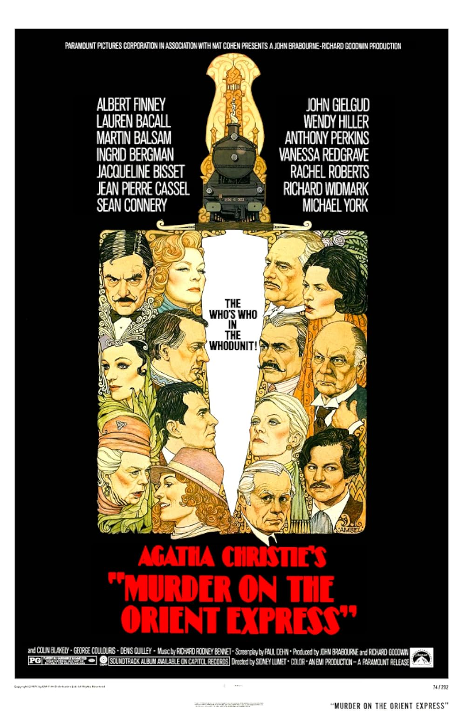

Murder on the Orient Express
47th Academy Awards
(Oscars 1975)
6 Nominations, 1 Award
| Nominations | ||
|---|---|---|
| Category | Nominees | Result |
| Actor | Albert Finney | Nominated |
| Actress in a Supporting Role | Ingrid Bergman | Won |
| Writing (Screenplay Adapted from Other Material) | Paul Dehn | Nominated |
| Cinematography | Geoffrey Unsworth | Nominated |
| Costume Design | Tony Walton | Nominated |
| Music (Original Dramatic Score) | Richard Rodney Bennett | Nominated |